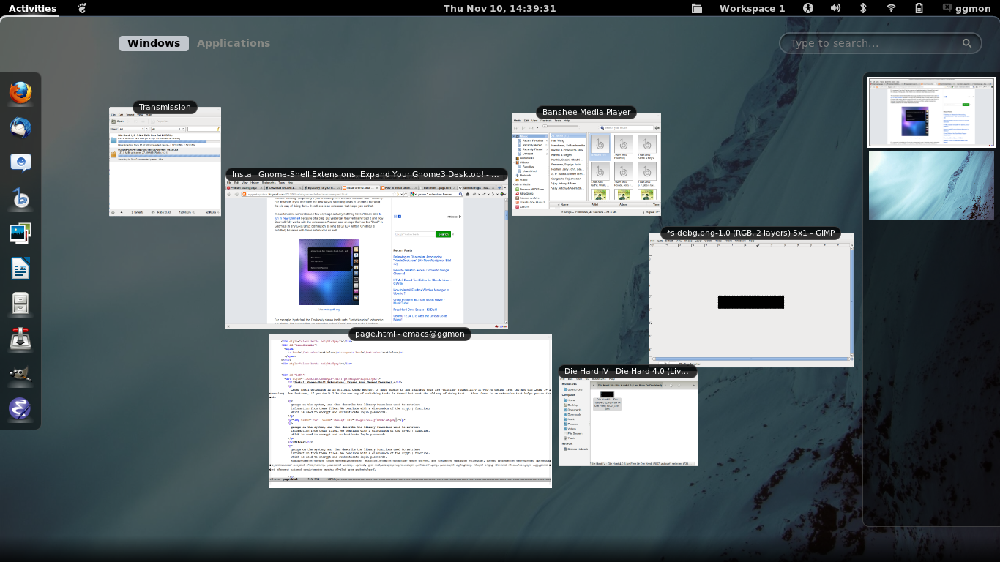

Have to
Gnome Shell extension is an official Gnome project to help people to add features that are "missing" (especially if you're coming from the now old Gnome 2+ version). For instance, if you don't like the new way of switching tasks in Gnome3 but want the old way of doing that... then there is an extension that helps you do that.
groups on the system, and then describe the library functions used to retrieve information from these files. We conclude with a discussion of the crypt() function, which is used to encrypt and authenticate login passwords.

The extensions were released few days ago actually but they haven't been able to run in new Gnome3 because of a bug. But yesterday they've finally fixed it and now Gnome3 fully works with the extensions.You can also change the how the "Dock" in Gnome3 (in any GNU/Linux distribution as long as GTK3+ written Gnome3 is installed) behaves with these extensions as well.
For example, by default the Dock only shows itself under "activities view", otherwise it is hidden. But by installing an extension called "Dock" you can make it behave very much like "Docky". Since all these shell extensions are supported officially, you should be able to install them using the same PPA for Gnome3 in Ubuntu... but if that does not work for you, then you'll have to compile them using the below command in Terminal.
Everything at your fingertips
Search is central to GNOME 3. Applications, windows, documents and even settings can all be quickly and easily searched for from one place. Accessing GNOME 3′s search is as simple as pressing the windows key and starting to type. This is a great feature for people who like things to happen fast. Watch the video Accessing Apps Quickly
Search is central to GNOME 3. Applications, windows, documents and even settings can all be quickly and easily searched for from one place. Accessing GNOME 3′s search is as simple as pressing the windows key and starting to type. This is a great feature for people who like things to happen fast.
groups on the system, and then describe the library functions used to retrieve information from these files. We conclude with a discussion of the crypt() function, which is used to encrypt and authenticate login passwords. ഭക്ഷ്യധാന്യങ്ങളുടെ വിലയില് വര്ധന അനുഭവപ്പെടാതിരിക്കെ, ഭക്ഷ്യോത്പന്നങ്ങളുടെ വിലയിലാണ് വര്ധന വരുന്നത്. ഇത് രാജ്യത്തിന്റെ വളര്ച്ചയുടെ സൂചനയാണ്. മൊത്തം ഇന്ധനങ്ങളുടെ വിലനിയന്ത്രണം എടുത്തുകളയുന്നതിലേക്കാണ് കാര്യങ്ങള് നീങ്ങുന്നതെന്നും പ്രധാനമന്ത്രി പറഞ്ഞു. എന്നാല്, ഇത് അഭിപ്രായവ്യത്യാസമുണ്ടാക്കാവുന്ന പ്രശ്നമാണ് എന്നും പ്രധാനമന്ത്രി കൂട്ടിച്ചേര്ത്തു. നികുതി വെട്ടിച്ച് വിദേശത്ത് നിക്ഷേപിക്കപ്പെടുന്ന കള്ളപ്പണത്തിന്റെ വിവരങ്ങള് രാജ്യങ്ങള് കൈമാറണമെന്ന ആവശ്യം ജി-20ല് ഇന്ത്യ ഉയര്ത്തിയിട്ടുണ്ട്.